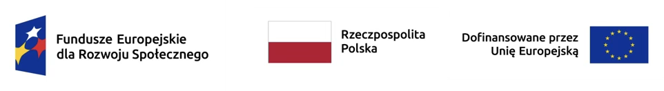
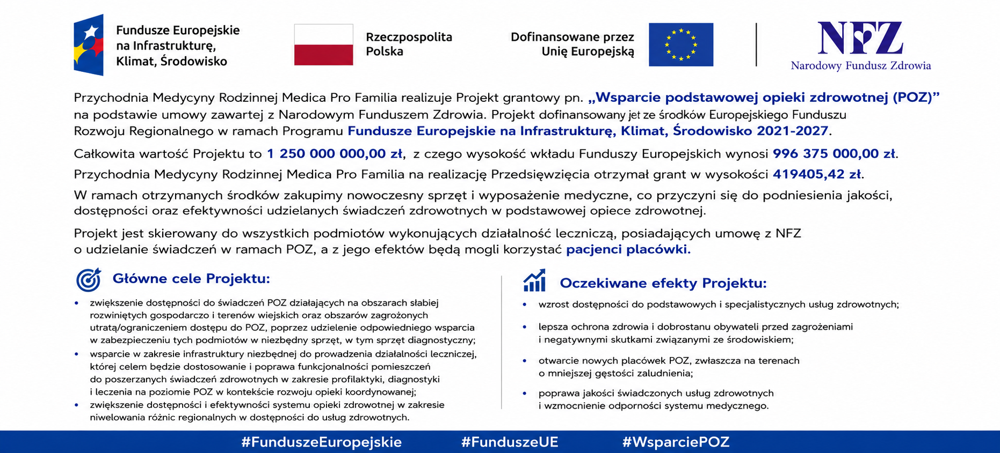

Rejestracja i przygotowanie do wizyty
telefon : 61 863 00 48
Zapisy do lekarza: osobiście, za pośrednictwem osób upoważnionych, telefonicznie lub elektronicznie przez rejestrację internetową.
Przypominamy, że według ustawy, świadczenia udzielane dzieciom do lat 6, odbywają się wyłącznie w bezpośrednim kontakcie z małym pacjentem w poradni.
REJESTRACJA ON-LINE wyłącznie do zadeklarowanego->lekarza rodzinnego
Przed wykonaniem telefonu do przychodni należy przygotować:
pesel, długopis, kartkę, ew. kod skierowania do specjalisty.
Pacjenci mający aktualnie jakiekolwiek objawy infekcji , niezależnie od wieku, proszeni są o zachowanie reżimu sanitarnego - odstępy, maseczki, wskazane rękawiczki.
UWAGA !
ZAPRASZAMY DO SKŁADANIA DEKLARACJI DO PIELĘGNIARKI ŚRODOWISKOWEJ
Wyniki badań
SPRAWDŹ WYNIKI BADAŃ
● Wejdź na stronę wyniki.medicaprofamilia.pl (bez www)
● Dane do logowania:
➢ Login: Twój PESEL
➢ Hasło: numer telefonu (9 cyfr, bez spacji)
● tel. komórkowy bez +48 np. 123456789
● tel. stacjonarny z 61 np. 613456789
● przepisz kod weryfikacyjny i kliknij
Zaloguj się !
Wszystkie wyniki badań są również dąstępne na IKP (Indywidualne Konto Pacjenta).
Recepty i dokumentacja medyczna
eRECEPTA
Zamówienia recept na leki stosowane przewlekle po wcześniejszej wizycie u lekarza, informacja w rejestracji.
Rezygnujemy z obsługi skrzynki mailowej.
W związku z wejściem w życie ustawy o ochronie danych osobowych RODO Informujemy o konieczności okazywania dokumentu tożsamości lub karty OSOZ podczas rejestracji.
Dokumentacja medyczna w tym recepty, badania laboratoryjne udostępniane są osobie której dotyczą, opiekunowi prawnemu lub osobie drugiej po okazaniu / złożeniu upoważnienia.
Prosimy o donoszenie kopii dokumentacji medycznej, kart informacyjnych m. in. ze szpitali, odpowiedzi od specjalistów, osobiście do przychodni.
Szczepienia i profilaktyka
Przypominamy, że ustawowo obowiązują szczepienia u dzieci i młodzieży. Przypominamy o zaległych szczepieniach zwłaszcza u 5-cio, 12-sto i 17/18-sto latków.
Przypominamy też, że dzieci, które skończyły 6 lat i więcej mają co najmniej rok zaległości w szczepieniach, które powinny być wykonane po ukończeniu 5 lat.
Dokładną godzinę szczepienia prosimy uzgodnić telefonicznie.
W naszej przychodni przy Ziębickiej 16a dostępna jest szczepionka dla dorosłych przeciwko Pneumokokom (odpłatna) - PREVENAR20.
Zachęcamy do szczepień po uprzedniej rejestracji telefonicznej.
Zapraszamy zdeklarowaną do naszej przychodni 9 - 13 letnią młodzież do szczepienia przeciwko HPV.
Szczepimy nieodpłatnie bardzo drogą szczepionką o nazwie Gardasil-9 (2 dawki w odstępie 6 miesięcy), zawierającą 9 serotypów wirusa HPV.
Osoby, które ukończyły 14 lat nie będą mogły już skorzystać z 1-szej dawki, a z drugiej wyłącznie przed zakończeniem 6 miesięcy (pacjent nie może skończyć 14,5 lat). Oznacza to , że obie dawki powinny być podane do ukończenia 14 lat. Po nie spełnieniu warunków szczepienia są wyłącznie płatne w przypadku Gardasilu 9.
W związku z powyższym prosimy o jak najszybsze zgłoszenie się dzieci od 9-13 lat.
Prośba o jak najwcześniejsze zapisanie się na szczepienie.
Informujemy również, że młodzież od ukończenia 14 - 18 lat może uzyskać receptę na bezpłatną szczepionkę o nazwie Cervarix (2-3 dawki w zależności od wieku), zawierającą 2 serotypy wirusa HPV.
Szczepionka p/HPV chroni przede wszystkim przed rakiem szyjki macicy, ale też pochwy i sromu u kobiet. Mężczyźni są nosicielami, mogą przyczynić się do powyższego raka u partnerki. Sami mogą zachorować na raka prącia. Obie płcie są chronione przed rakiem jamy ustnej, gardła, przełyku, krtani, oskrzeli i odbytu oraz brodawkami narządów płciowych i ich okolic, a także powyższych wymienionych miejsc.
Ankieta do programu kardiologicznego - CHUK (do wydruku 2 pierwsze strony)
Program kardiologiczny realizowany jest w ramach umowy z NFZ w zakresie POZ dla zdeklarowanych pacjentów, między 35 a 55 rokiem życia.
PROGRAM PROFILAKTYCZNY 40+
Poradnie specjalistyczne
Poradnia Okulistyczna :
zabiegi kapsolutomii laserem typu YAG
Rejestracja telefoniczna.
Wszyscy lekarze pracujący w ramach NFZ,
przyjmują również prywatnie ( nie dotyczy lekarzy POZ ) -
szybkie terminy, bez kolejki, poza godzinami kontraktów z NFZ.
Projekty i ogłoszenia

Przychodnia Medycyny Rodzinnej Medica Pro Familia jest Grantobiorcą Przedsięwzięcia pn. „Poprawa dostępności i jakości świadczeń bez barier w Medica Pro Familia”, które finansowane jest z Funduszy Europejskich.
Nasza placówka otrzymała Grant na poprawę dostępności świadczeń dla osób ze szczególnymi potrzebami, w szczególności osób z ograniczeniami ruchowymi, osób starszych oraz innych pacjentów wymagających szczególnych rozwiązań w zakresie dostępności.
Celem naszego Przedsięwzięcia jest zwiększenie dostępności placówki AOS dla osób ze szczególnymi potrzebami poprzez dostosowanie jej do wymogów Standardu Dostępności AOS w zakresie dostępności architektonicznej, organizacyjnej, informacyjno-komunikacyjnej oraz diagnostycznej. Realizacja Przedsięwzięcia ma na celu eliminację barier dla osób z ograniczeniami ruchowymi i sensorycznymi oraz poprawę jakości, komfortu i bezpieczeństwa udzielanych świadczeń.
Realizacja Przedsięwzięcia ułatwi naszym pacjentom korzystanie ze świadczeń medycznych, m.in. poprzez zwiększenie liczby dostępnych stanowisk diagnostycznych i zabiegowych, zakup aparatów USG i kozetek z regulowaną wysokością oraz zastosowanie rozwiązań poprawiających dostępność dla osób słabosłyszących i osób o ograniczonej mobilności.
Wysokość dofinansowania wynosi 440 830,95 zł, w tym z Funduszy Europejskich 363 773,69 zł.
Więcej informacji o Funduszach Europejskich dla ochrony zdrowia dostępnych jest na stronie internetowej Ministerstwa Zdrowia.
INFORMACJA O WYBORZE WYKONAWCY
W związku z przeprowadzonym postępowaniem dotyczącym dostawy dwóch fabrycznie nowych aparatów ultrasonograficznych (USG) wraz z wymaganym wyposażeniem, głowicami obrazowymi, oprogramowaniem, konfiguracją, uruchomieniem oraz szkoleniem personelu medycznego, realizowanym w ramach Projektu grantowego pn. „Dostępność Plus dla AOS”, nr FERS.03.07-IP.07-0001/23, informujemy, że dokonano wyboru najkorzystniejszej oferty.
Wybrany Wykonawca:
EMS – Euromed Medical Solution Sp. z o.o.
Uzasadnienie wyboru:
Oferta złożona przez EMS – Euromed Medical Solution Sp. z o.o. spełniła wymagania określone w zapytaniu ofertowym oraz zawierała najniższą cenę spośród prawidłowo złożonych ofert niepodlegających odrzuceniu, zgodnie z przyjętym kryterium oceny ofert.
W związku z realizacją Przedsięwzięcia w ramach Projektu grantowego pn. „Dostępność Plus dla AOS”, realizowanego w ramach Działania FERS.03.07 programu Fundusze Europejskie dla Rozwoju Społecznego 2021–2027, określonego we wniosku o dofinansowanie projektu nr FERS.03.07-IP.07-0001/23, którego Beneficjentem jest Minister Zdrowia, współfinansowanego ze środków Europejskiego Funduszu Społecznego Plus, zapraszamy do składania ofert na dostawę dwóch fabrycznie nowych aparatów ultrasonograficznych (USG) wraz z wymaganym wyposażeniem, głowicami obrazowymi, oprogramowaniem, konfiguracją, uruchomieniem oraz szkoleniem personelu medycznego.
Termin składania ofert upływa w dniu 14.08.2026 r. o godz. 18:00.
Oferty prosimy przesyłać drogą elektroniczną na adres:
marta.sniegowska95@gmail.com
PLIKI DO POBRANIA:
Zapytanie ofertowe – „Dostawa dwóch aparatów USG”
Załącznik nr 1 – Formularz ofertowy
Załącznik nr 2 – Wzór umowy
Załącznik nr 3 – Opis Przedmiotu Zamówienia (OPZ)
Załącznik nr 4 – Oświadczenie o braku powiązań osobowych i kapitałowych z Zamawiającym.
Wsparcie podstawowej opieki zdrowotnej (POZ)
